import pandas as pd
import seaborn as sns
import matplotlib.pyplot as plt
import numpy as np
import missingno as msnoExploratory Data Analysis
In BRICS countries, exploratory data analysis (EDA) is a critical procedure for analysing economic data. It assists academics and policymakers in learning about economic trends, inequities, and anomalies. EDA allows for the comparison of economic indicators across different countries, assisting in the assessment of their relative economic performance. It provides vital information for informed decision-making in sectors such as trade, investment, and policy formulation by exposing hidden links and correlations. Additionally, it is critical in a dynamic economic landscape for understanding the complexities of economic data, guiding strategies, and encouraging sustainable growth and collaboration among the BRICS members.
For my data, EDA is the only method to uncover the hidden insights within the dataset that will help me explore the data in comparison to all the nations at hand.
india=pd.read_csv('../data/india.csv')
russia=pd.read_csv('../data/russia.csv')
china=pd.read_csv('../data/china.csv')
brazil=pd.read_csv('../data/brazil.csv')
southafrica=pd.read_csv('../data/southafrica.csv')I created and treated five separate datasets. In terms of India, you see that there is a greater variation in Exports and Imports as a % of GDP and in Trade GDP. This is due to the developing nature of India, being one of the fastest growing economies of the world.
india.describe()| year | adj_NNI_g | adj_NNI_c | adj_savings_fix_cap_GNI | adj_savings_edu_GNI | adj_NNS_GNI | curr_acc_bal | ex_imp_gdp | ex_imp_growth | ex_debt_shocks | ... | trade_gdp | cpi | inflation | real_interest_rate | lending_interest_rate | life_exp_birth | expense_gdp | interest_payments | military expenditure | year.1 | |
|---|---|---|---|---|---|---|---|---|---|---|---|---|---|---|---|---|---|---|---|---|---|
| count | 43.000000 | 43.000000 | 4.300000e+01 | 43.000000 | 43.000000 | 43.000000 | 43.000000 | 43.000000 | 43.000000 | 43.000000 | ... | 43.000000 | 43.000000 | 43.000000 | 43.000000 | 43.000000 | 43.000000 | 43.000000 | 43.000000 | 43.000000 | 43.000000 |
| mean | 2000.000000 | 5.842249 | 9.089853e+11 | 10.100195 | 3.177411 | 16.975547 | -1.348015 | 14.313641 | 9.439492 | 20.750216 | ... | 30.948268 | 73.732095 | 7.656467 | 5.631990 | 13.114440 | 62.858024 | 14.942512 | 27.081472 | 2.901476 | 2000.000000 |
| std | 12.556539 | 3.928440 | 6.357574e+11 | 0.737280 | 0.360385 | 6.502949 | 1.209384 | 6.769738 | 9.631641 | 4.938651 | ... | 14.657456 | 58.271793 | 3.027370 | 2.572440 | 3.092273 | 5.115946 | 1.271353 | 6.641309 | 0.439018 | 12.556539 |
| min | 1979.000000 | -6.952693 | 2.413109e+11 | 8.055168 | 2.600000 | 6.418183 | -5.004890 | 5.196222 | -9.135286 | 11.096107 | ... | 12.219272 | 9.737409 | 3.328173 | -1.983859 | 8.333350 | 53.611000 | 11.376034 | 13.780033 | 2.424285 | 1979.000000 |
| 25% | 1989.500000 | 4.152437 | 3.949670e+11 | 9.733032 | 3.080000 | 11.701860 | -1.902352 | 7.773796 | 4.728976 | 17.849354 | ... | 16.246994 | 24.540550 | 4.927595 | 4.406809 | 10.270833 | 58.853500 | 14.600384 | 23.190785 | 2.563654 | 1989.500000 |
| 50% | 2000.000000 | 5.842249 | 6.759609e+11 | 10.347631 | 3.080000 | 17.400965 | -1.339509 | 12.997236 | 7.792389 | 20.201660 | ... | 26.900923 | 56.391926 | 7.164252 | 5.814777 | 12.541667 | 62.858024 | 15.145108 | 27.081472 | 2.812528 | 2000.000000 |
| 75% | 2010.500000 | 8.350734 | 1.284807e+12 | 10.621234 | 3.210531 | 22.549359 | -0.800226 | 20.164174 | 14.331228 | 22.921025 | ... | 44.642326 | 114.073666 | 9.748438 | 7.597561 | 16.500000 | 67.074500 | 15.561610 | 31.898042 | 3.131583 | 2010.500000 |
| max | 2021.000000 | 12.397011 | 2.367047e+12 | 11.088283 | 4.290000 | 26.670888 | 1.443561 | 25.430861 | 31.396073 | 33.157433 | ... | 55.793722 | 205.266241 | 13.870246 | 9.191247 | 18.916667 | 70.910000 | 17.227670 | 40.936291 | 4.231318 | 2021.000000 |
8 rows × 35 columns
india.info() # the data is in correct format except year since it will later be dropped but we need it for analysis now.<class 'pandas.core.frame.DataFrame'>
RangeIndex: 43 entries, 0 to 42
Data columns (total 36 columns):
# Column Non-Null Count Dtype
--- ------ -------------- -----
0 year 43 non-null int64
1 adj_NNI_g 43 non-null float64
2 adj_NNI_c 43 non-null float64
3 adj_savings_fix_cap_GNI 43 non-null float64
4 adj_savings_edu_GNI 43 non-null float64
5 adj_NNS_GNI 43 non-null float64
6 curr_acc_bal 43 non-null float64
7 ex_imp_gdp 43 non-null float64
8 ex_imp_growth 43 non-null float64
9 ex_debt_shocks 43 non-null float64
10 final_consump_exp_gdp 43 non-null float64
11 final_consump_exp_growth 43 non-null float64
12 fdi_net_inflows 43 non-null float64
13 fdi_net_outflows 43 non-null float64
14 gdp_growth 43 non-null float64
15 gdp_per_capita_growth 43 non-null float64
16 gener_govt_fin_consump_exp 43 non-null float64
17 gni_growth 43 non-null float64
18 goods_exp_bop 43 non-null float64
19 goods_imp_bop 43 non-null float64
20 imports_goods_services_gdp 43 non-null float64
21 imports_goods_services_growth 43 non-null float64
22 services_gdp 43 non-null float64
23 services_growth 43 non-null float64
24 short_term_debt_tot_reserves 43 non-null float64
25 trade_gdp 43 non-null float64
26 cpi 43 non-null float64
27 inflation 43 non-null float64
28 real_interest_rate 43 non-null float64
29 lending_interest_rate 43 non-null float64
30 life_exp_birth 43 non-null float64
31 expense_gdp 43 non-null float64
32 interest_payments 43 non-null float64
33 military expenditure 43 non-null float64
34 year.1 43 non-null int64
35 labels 42 non-null object
dtypes: float64(33), int64(2), object(1)
memory usage: 12.2+ KBFor Russia, if you see, there were periods in Russia where they were in deficit to the times they in surplus showcasing their evolultion as a nature with the economic and geopolitical wars Russia engages in. In terms of the Adjusted Savings as a % of GNI, you also see the huge difference and a huge variation in the dataset. It talks a reduction in their education expenses due to which they have it as a savings in their GNI% category. Inflation, Lending Interest Rate are also shown to be extremely volatile in nature, thus showcasing their non-linear nature of spending habits and the state of their economy.
russia.describe()| year | adj_NNI_g | adj_NNI_c | adj_savings_fix_cap_GNI | adj_savings_edu_GNI | adj_NNS_GNI | curr_acc_bal | ex_imp_gdp | ex_imp_growth | ex_debt_shocks | ... | trade_gdp | cpi | inflation | real_interest_rate | lending_interest_rate | life_exp_birth | expense_gdp | interest_payments | military expenditure | year.1 | |
|---|---|---|---|---|---|---|---|---|---|---|---|---|---|---|---|---|---|---|---|---|---|
| count | 29.000000 | 29.000000 | 2.900000e+01 | 29.000000 | 29.000000 | 29.000000 | 29.000000 | 29.000000 | 29.000000 | 29.000000 | ... | 29.000000 | 29.000000 | 29.000000 | 29.000000 | 29.000000 | 29.000000 | 29.000000 | 29.000000 | 29.000000 | 29.000000 |
| mean | 2008.000000 | 3.861741 | 8.291734e+11 | 3.927901 | 17.793590 | 3.720208 | 28.294512 | 10.513962 | 5.655151 | 30.589212 | ... | 52.635377 | 2.534344 | 35.634946 | 52.396738 | 87.843702 | 32.123031 | 0.120247 | 68.190967 | 3.758945 | 2008.000000 |
| std | 8.514693 | 10.236271 | 2.921181e+11 | 10.384020 | 10.665802 | 0.299095 | 3.452955 | 11.810984 | 4.118602 | 4.933515 | ... | 2.821579 | 5.021355 | 36.505148 | 6.405027 | 61.438903 | 64.958295 | 8.320392 | 2.703291 | 0.557789 | 8.514693 |
| min | 1994.000000 | -20.796923 | 3.281460e+11 | -20.769775 | 9.545284 | 3.544344 | 20.202553 | -19.694782 | -0.206268 | 24.729842 | ... | 44.832608 | -10.125699 | 10.364800 | 43.774114 | 2.128943 | 2.878297 | -18.951553 | 64.467073 | 2.732649 | 1994.000000 |
| 25% | 2001.000000 | -1.349856 | 5.790573e+11 | -1.485800 | 11.784852 | 3.549808 | 27.117473 | 10.513962 | 2.369115 | 27.111097 | ... | 50.658271 | -0.636282 | 13.365498 | 47.801341 | 37.365785 | 6.849392 | -4.078692 | 65.529756 | 3.331237 | 2001.000000 |
| 50% | 2008.000000 | 3.861741 | 9.051567e+11 | 3.927901 | 13.503027 | 3.557456 | 28.294512 | 14.094360 | 4.754527 | 29.215561 | ... | 53.428806 | 2.447491 | 16.480539 | 50.557744 | 83.826166 | 11.647330 | 0.120247 | 67.949268 | 3.720451 | 2008.000000 |
| 75% | 2015.000000 | 10.726779 | 1.097922e+12 | 11.149953 | 17.793590 | 3.720208 | 29.714409 | 17.784660 | 7.952329 | 33.730475 | ... | 54.172944 | 5.539901 | 38.844163 | 55.772253 | 131.155273 | 20.798761 | 4.945604 | 70.578780 | 4.039809 | 2015.000000 |
| max | 2022.000000 | 22.534768 | 1.157478e+12 | 23.051254 | 48.011109 | 4.413240 | 37.116967 | 22.081369 | 17.474242 | 44.060441 | ... | 57.012325 | 13.621542 | 136.909949 | 69.393281 | 199.372063 | 307.722636 | 19.616081 | 73.083902 | 5.425148 | 2022.000000 |
8 rows × 35 columns
russia.info()<class 'pandas.core.frame.DataFrame'>
RangeIndex: 29 entries, 0 to 28
Data columns (total 36 columns):
# Column Non-Null Count Dtype
--- ------ -------------- -----
0 year 29 non-null int64
1 adj_NNI_g 29 non-null float64
2 adj_NNI_c 29 non-null float64
3 adj_savings_fix_cap_GNI 29 non-null float64
4 adj_savings_edu_GNI 29 non-null float64
5 adj_NNS_GNI 29 non-null float64
6 curr_acc_bal 29 non-null float64
7 ex_imp_gdp 29 non-null float64
8 ex_imp_growth 29 non-null float64
9 ex_debt_shocks 29 non-null float64
10 final_consump_exp_gdp 29 non-null float64
11 final_consump_exp_growth 29 non-null float64
12 fdi_net_inflows 29 non-null float64
13 fdi_net_outflows 29 non-null float64
14 gdp_growth 29 non-null float64
15 gdp_per_capita_growth 29 non-null float64
16 gener_govt_fin_consump_exp 29 non-null float64
17 gni_growth 29 non-null float64
18 goods_exp_bop 29 non-null float64
19 goods_imp_bop 29 non-null float64
20 imports_goods_services_gdp 29 non-null float64
21 imports_goods_services_growth 29 non-null float64
22 services_gdp 29 non-null float64
23 services_growth 29 non-null float64
24 short_term_debt_tot_reserves 29 non-null float64
25 trade_gdp 29 non-null float64
26 cpi 29 non-null float64
27 inflation 29 non-null float64
28 real_interest_rate 29 non-null float64
29 lending_interest_rate 29 non-null float64
30 life_exp_birth 29 non-null float64
31 expense_gdp 29 non-null float64
32 interest_payments 29 non-null float64
33 military expenditure 29 non-null float64
34 year.1 29 non-null int64
35 labels 28 non-null object
dtypes: float64(33), int64(2), object(1)
memory usage: 8.3+ KBChina, personally has been one of the most interesting nations to learn about as most of the data that China shares with people is also the data it “chooses” to share. The book of Silk Route has shows China in from a fascinating point of view. If you look at China, there is not much of volatile relations to be seen in China. The way they function being a manufacturing nation has been non-volatile primarily depending on their masses as it is a labour-intensive nation that is now emerging to steer towards knowledge management. One of my most favorite nations from an economics lens.
china.describe()| year | adj_NNI_g | adj_NNI_c | adj_savings_fix_cap_GNI | adj_savings_edu_GNI | adj_NNS_GNI | curr_acc_bal | ex_imp_gdp | ex_imp_growth | ex_debt_shocks | ... | trade_gdp | cpi | inflation | real_interest_rate | lending_interest_rate | life_exp_birth | expense_gdp | interest_payments | military expenditure | year.1 | |
|---|---|---|---|---|---|---|---|---|---|---|---|---|---|---|---|---|---|---|---|---|---|
| count | 34.000000 | 34.000000 | 3.400000e+01 | 34.000000 | 3.400000e+01 | 34.000000 | 34.000000 | 34.000000 | 34.000000 | 34.000000 | ... | 34.000000 | 34.000000 | 34.000000 | 34.000000 | 34.000000 | 34.000000 | 34.000000 | 34.000000 | 34.000000 | 34.000000 |
| mean | 2005.500000 | 9.020550 | 5.132355e+12 | 16.290555 | 1.013829e+12 | 1.774727 | 43.537202 | 27.237859 | 2.643568 | 21.768803 | ... | 42.792335 | 9.143661 | 25.335231 | 40.718724 | 90.500166 | 4.287894 | 1.955882 | 73.560848 | 9.693714 | 2005.500000 |
| std | 9.958246 | 3.063379 | 2.753216e+12 | 5.047229 | 1.176837e+12 | 0.098320 | 4.676922 | 4.451970 | 2.597303 | 6.628568 | ... | 7.114816 | 2.918800 | 11.593431 | 11.671459 | 26.687641 | 5.787973 | 3.226872 | 3.291144 | 3.867794 | 9.958246 |
| min | 1989.000000 | 0.043030 | 1.227478e+12 | 9.402707 | 3.274752e+10 | 1.500000 | 35.858594 | 18.788405 | -2.610340 | 9.027345 | ... | 32.382773 | 1.947122 | 7.615140 | 19.134707 | 39.242469 | -1.401473 | -7.989744 | 67.838000 | 4.772260 | 1989.000000 |
| 25% | 1997.250000 | 7.953956 | 2.787246e+12 | 12.756853 | 1.233250e+11 | 1.787135 | 39.537538 | 24.090842 | 1.507681 | 18.359073 | ... | 35.927687 | 8.277122 | 18.020955 | 34.340981 | 80.755872 | 1.476052 | -0.117685 | 70.797000 | 5.973111 | 1997.250000 |
| 50% | 2005.500000 | 9.020550 | 5.132355e+12 | 14.564874 | 3.661130e+11 | 1.790000 | 43.716609 | 27.359017 | 2.108668 | 20.128060 | ... | 42.138080 | 9.368637 | 23.923220 | 37.888116 | 87.222774 | 2.519473 | 2.579420 | 73.929500 | 10.208033 | 2005.500000 |
| 75% | 2013.750000 | 10.723327 | 6.609833e+12 | 20.891664 | 1.725745e+12 | 1.790000 | 47.236811 | 30.986592 | 3.427569 | 25.306856 | ... | 47.923306 | 10.388286 | 30.183370 | 47.886736 | 112.760046 | 4.568735 | 3.748206 | 76.387000 | 13.169320 | 2013.750000 |
| max | 2022.000000 | 15.198015 | 1.049563e+13 | 26.143102 | 3.816893e+12 | 2.035901 | 51.547499 | 35.188528 | 9.947890 | 36.035026 | ... | 54.458536 | 16.071495 | 55.930751 | 64.478884 | 131.919357 | 24.256990 | 7.356478 | 78.211000 | 16.867626 | 2022.000000 |
8 rows × 35 columns
china.info()<class 'pandas.core.frame.DataFrame'>
RangeIndex: 34 entries, 0 to 33
Data columns (total 36 columns):
# Column Non-Null Count Dtype
--- ------ -------------- -----
0 year 34 non-null int64
1 adj_NNI_g 34 non-null float64
2 adj_NNI_c 34 non-null float64
3 adj_savings_fix_cap_GNI 34 non-null float64
4 adj_savings_edu_GNI 34 non-null float64
5 adj_NNS_GNI 34 non-null float64
6 curr_acc_bal 34 non-null float64
7 ex_imp_gdp 34 non-null float64
8 ex_imp_growth 34 non-null float64
9 ex_debt_shocks 34 non-null float64
10 final_consump_exp_gdp 0 non-null float64
11 final_consump_exp_growth 34 non-null float64
12 fdi_net_inflows 34 non-null float64
13 fdi_net_outflows 34 non-null float64
14 gdp_growth 34 non-null float64
15 gdp_per_capita_growth 34 non-null float64
16 gener_govt_fin_consump_exp 34 non-null float64
17 gni_growth 34 non-null float64
18 goods_exp_bop 34 non-null float64
19 goods_imp_bop 0 non-null float64
20 imports_goods_services_gdp 34 non-null float64
21 imports_goods_services_growth 34 non-null float64
22 services_gdp 34 non-null float64
23 services_growth 34 non-null float64
24 short_term_debt_tot_reserves 0 non-null float64
25 trade_gdp 34 non-null float64
26 cpi 34 non-null float64
27 inflation 34 non-null float64
28 real_interest_rate 34 non-null float64
29 lending_interest_rate 34 non-null float64
30 life_exp_birth 34 non-null float64
31 expense_gdp 34 non-null float64
32 interest_payments 34 non-null float64
33 military expenditure 34 non-null float64
34 year.1 34 non-null int64
35 labels 34 non-null object
dtypes: float64(33), int64(2), object(1)
memory usage: 9.7+ KBSouth Africa has been a country with intense socio-political changes. Due to which the deviations seen from this nation can be quite altering. The inflation and the lending interest rates show us the economy has always been in recession most of the time, often asking for foreign aid from other developed nations. Yet, South Africa, due to this labour and natural capital is now emerging to be one of the competing nations.
southafrica.describe()| year | adj_NNI_g | adj_NNI_c | adj_savings_fix_cap_GNI | adj_savings_edu_GNI | adj_NNS_GNI | curr_acc_bal | ex_imp_gdp | ex_imp_growth | ex_debt_shocks | ... | trade_gdp | cpi | inflation | real_interest_rate | lending_interest_rate | life_exp_birth | expense_gdp | interest_payments | military expenditure | year.1 | |
|---|---|---|---|---|---|---|---|---|---|---|---|---|---|---|---|---|---|---|---|---|---|
| count | 50.00000 | 50.000000 | 5.000000e+01 | 50.000000 | 50.000000 | 50.000000 | 50.000000 | 50.000000 | 50.000000 | 50.000000 | ... | 50.000000 | 50.000000 | 50.000000 | 50.000000 | 50.000000 | 50.000000 | 50.000000 | 50.000000 | 50.000000 | 50.00000 |
| mean | 1997.50000 | 2.944993 | 1.726618e+11 | 1.019058 | 14.617378 | 5.340494 | 19.599354 | 4.980877 | -0.977091 | 25.449196 | ... | 57.961911 | 2.920324 | 119.946081 | 48.797300 | 62.701001 | 8.937808 | 3.317721 | 60.457939 | 2.295429 | 1997.50000 |
| std | 14.57738 | 4.186829 | 7.426311e+10 | 4.208455 | 1.600373 | 0.483089 | 5.516894 | 5.373903 | 2.918324 | 3.539869 | ... | 5.748344 | 2.180185 | 61.294859 | 7.353538 | 53.653821 | 4.429910 | 4.321426 | 3.316655 | 1.372066 | 14.57738 |
| min | 1973.00000 | -6.105116 | 8.169750e+10 | -8.844539 | 12.005429 | 4.600000 | 13.810482 | -0.595410 | -5.586817 | 18.955147 | ... | 46.894611 | -4.398186 | 60.145736 | 34.321353 | 2.896167 | -0.692030 | -11.009011 | 53.980000 | 0.739894 | 1973.00000 |
| 25% | 1985.25000 | 0.866885 | 1.031776e+11 | -0.602860 | 13.568121 | 5.039765 | 15.241517 | 1.154841 | -2.950219 | 22.578834 | ... | 52.237073 | 1.572643 | 87.004999 | 43.553642 | 13.055219 | 5.424068 | 1.939067 | 58.122000 | 1.035020 | 1985.25000 |
| 50% | 1997.50000 | 2.923929 | 1.612442e+11 | 0.828012 | 14.160999 | 5.130000 | 17.501936 | 3.362576 | -1.163550 | 25.792956 | ... | 60.182314 | 2.983437 | 119.946081 | 48.838556 | 52.323241 | 8.639113 | 3.610582 | 60.869000 | 1.555722 | 1997.50000 |
| 75% | 2009.75000 | 4.908132 | 2.438179e+11 | 3.076031 | 15.655139 | 5.614009 | 22.769737 | 5.869842 | 1.181907 | 27.709766 | ... | 63.379119 | 4.425018 | 119.946081 | 54.093948 | 99.017739 | 12.660460 | 4.930434 | 63.044000 | 3.632120 | 2009.75000 |
| max | 2022.00000 | 15.909859 | 2.991770e+11 | 13.825588 | 18.693445 | 6.600000 | 33.709562 | 21.039421 | 5.287891 | 33.443871 | ... | 64.716759 | 6.939034 | 462.705392 | 65.974524 | 183.682744 | 18.654919 | 12.691034 | 66.175000 | 5.263335 | 2022.00000 |
8 rows × 35 columns
southafrica.info()<class 'pandas.core.frame.DataFrame'>
RangeIndex: 50 entries, 0 to 49
Data columns (total 36 columns):
# Column Non-Null Count Dtype
--- ------ -------------- -----
0 year 50 non-null int64
1 adj_NNI_g 50 non-null float64
2 adj_NNI_c 50 non-null float64
3 adj_savings_fix_cap_GNI 50 non-null float64
4 adj_savings_edu_GNI 50 non-null float64
5 adj_NNS_GNI 50 non-null float64
6 curr_acc_bal 50 non-null float64
7 ex_imp_gdp 50 non-null float64
8 ex_imp_growth 50 non-null float64
9 ex_debt_shocks 50 non-null float64
10 final_consump_exp_gdp 50 non-null float64
11 final_consump_exp_growth 50 non-null float64
12 fdi_net_inflows 50 non-null float64
13 fdi_net_outflows 50 non-null float64
14 gdp_growth 50 non-null float64
15 gdp_per_capita_growth 50 non-null float64
16 gener_govt_fin_consump_exp 50 non-null float64
17 gni_growth 50 non-null float64
18 goods_exp_bop 50 non-null float64
19 goods_imp_bop 50 non-null float64
20 imports_goods_services_gdp 50 non-null float64
21 imports_goods_services_growth 50 non-null float64
22 services_gdp 50 non-null float64
23 services_growth 50 non-null float64
24 short_term_debt_tot_reserves 50 non-null float64
25 trade_gdp 50 non-null float64
26 cpi 50 non-null float64
27 inflation 50 non-null float64
28 real_interest_rate 50 non-null float64
29 lending_interest_rate 50 non-null float64
30 life_exp_birth 50 non-null float64
31 expense_gdp 50 non-null float64
32 interest_payments 50 non-null float64
33 military expenditure 50 non-null float64
34 year.1 50 non-null int64
35 labels 41 non-null object
dtypes: float64(33), int64(2), object(1)
memory usage: 14.2+ KBBrazil’s economic context various in accordance to the time, with periods of normal growth and periods of high growth, that also states the nature of it’s geo-political reign. If you look at the indicators, the Adjusted Savings for Fixed Capital and Trade GDP are interesting to look at.
brazil.describe()| adj_NNI_g | adj_NNI_c | adj_savings_fix_cap_GNI | adj_savings_edu_GNI | adj_NNS_GNI | curr_acc_bal | ex_imp_gdp | ex_imp_growth | ex_debt_shocks | final_consump_exp_gdp | ... | trade_gdp | cpi | inflation | real_interest_rate | lending_interest_rate | life_exp_birth | expense_gdp | interest_payments | military expenditure | year | |
|---|---|---|---|---|---|---|---|---|---|---|---|---|---|---|---|---|---|---|---|---|---|
| count | 50.000000 | 5.000000e+01 | 50.000000 | 50.000000 | 50.000000 | 50.000000 | 50.000000 | 50.000000 | 50.000000 | 50.000000 | ... | 50.000000 | 50.000000 | 50.000000 | 50.000000 | 5.000000e+01 | 50.000000 | 50.000000 | 50.000000 | 50.000000 | 50.00000 |
| mean | 2.858273 | 9.927705e+11 | 1.270081 | 10.750257 | 4.457679 | 17.787293 | 7.006470 | -2.259920 | 11.170290 | 6.063046 | ... | 53.893826 | 3.464068 | 84.382637 | 22.197876 | 6.731385e+01 | 280.265403 | 38.892255 | 68.136286 | 1.596424 | 1997.50000 |
| std | 5.537414 | 3.618374e+11 | 5.374688 | 0.495756 | 0.988642 | 3.798667 | 3.663059 | 2.017774 | 3.329268 | 7.934414 | ... | 9.139374 | 3.591394 | 86.860088 | 5.873609 | 5.793798e+01 | 591.724093 | 10.483542 | 5.049809 | 0.337717 | 14.57738 |
| min | -13.457070 | 4.678463e+11 | -15.009283 | 9.925297 | 2.800000 | 11.179231 | 0.949568 | -6.014062 | 6.692986 | -10.574251 | ... | 38.714484 | -3.738107 | 8.731629 | 14.390878 | 3.572040e-10 | 3.195076 | 16.728245 | 58.472000 | 1.053422 | 1973.00000 |
| 25% | 0.329104 | 6.674528e+11 | -1.043909 | 10.453263 | 3.806250 | 14.939308 | 4.276090 | -3.729127 | 8.317338 | 0.483849 | ... | 43.356767 | 1.590630 | 21.868827 | 16.658106 | 2.911174e-01 | 6.235493 | 35.108576 | 64.308500 | 1.368802 | 1985.25000 |
| 50% | 2.888449 | 9.484250e+11 | 1.270081 | 10.624243 | 4.345000 | 18.026720 | 7.006470 | -2.545527 | 10.866948 | 5.625319 | ... | 57.590546 | 3.012630 | 61.252703 | 21.441260 | 6.731385e+01 | 11.997513 | 38.892255 | 68.611000 | 1.521730 | 1997.50000 |
| 75% | 5.450817 | 1.315305e+12 | 3.548577 | 10.981732 | 5.082500 | 19.508526 | 8.286224 | -0.394964 | 13.232901 | 11.656455 | ... | 60.452174 | 5.030491 | 93.389959 | 25.977764 | 9.880075e+01 | 280.265403 | 38.892255 | 72.741250 | 1.832601 | 2009.75000 |
| max | 22.343467 | 1.629388e+12 | 20.413400 | 12.111642 | 6.285939 | 33.988799 | 23.294785 | 1.559017 | 20.045538 | 22.614292 | ... | 73.337880 | 15.641424 | 437.374535 | 39.339994 | 2.044821e+02 | 2947.732772 | 77.616838 | 75.338000 | 2.686250 | 2022.00000 |
8 rows × 34 columns
brazil.info()<class 'pandas.core.frame.DataFrame'>
RangeIndex: 50 entries, 0 to 49
Data columns (total 35 columns):
# Column Non-Null Count Dtype
--- ------ -------------- -----
0 adj_NNI_g 50 non-null float64
1 adj_NNI_c 50 non-null float64
2 adj_savings_fix_cap_GNI 50 non-null float64
3 adj_savings_edu_GNI 50 non-null float64
4 adj_NNS_GNI 50 non-null float64
5 curr_acc_bal 50 non-null float64
6 ex_imp_gdp 50 non-null float64
7 ex_imp_growth 50 non-null float64
8 ex_debt_shocks 50 non-null float64
9 final_consump_exp_gdp 50 non-null float64
10 final_consump_exp_growth 50 non-null float64
11 fdi_net_inflows 50 non-null float64
12 fdi_net_outflows 50 non-null float64
13 gdp_growth 50 non-null float64
14 gdp_per_capita_growth 50 non-null float64
15 gener_govt_fin_consump_exp 50 non-null float64
16 gni_growth 50 non-null float64
17 goods_exp_bop 50 non-null float64
18 goods_imp_bop 50 non-null float64
19 imports_goods_services_gdp 50 non-null float64
20 imports_goods_services_growth 50 non-null float64
21 services_gdp 50 non-null float64
22 services_growth 50 non-null float64
23 short_term_debt_tot_reserves 50 non-null float64
24 trade_gdp 50 non-null float64
25 cpi 50 non-null float64
26 inflation 50 non-null float64
27 real_interest_rate 50 non-null float64
28 lending_interest_rate 50 non-null float64
29 life_exp_birth 50 non-null float64
30 expense_gdp 50 non-null float64
31 interest_payments 50 non-null float64
32 military expenditure 50 non-null float64
33 year 50 non-null int64
34 labels 50 non-null object
dtypes: float64(33), int64(1), object(1)
memory usage: 13.8+ KBVisual Data Representation
Histograms
fig, ax = plt.subplots()
ax.hist(india["inflation"], bins=30, alpha=0.5, label='India')
ax.hist(southafrica["inflation"], bins=30, alpha=0.5, label='South Africa')
ax.hist(brazil["inflation"], bins=30, alpha=0.5, label='Brazil')
ax.hist(russia["inflation"], bins=30, alpha=0.5, label='Russia')
ax.hist(china["inflation"], bins=30, alpha=0.5, label='China')
ax.set_xlabel('Inflation')
ax.set_ylabel('Percentage')
ax.set_title('BRICS')
ax.legend()
plt.show()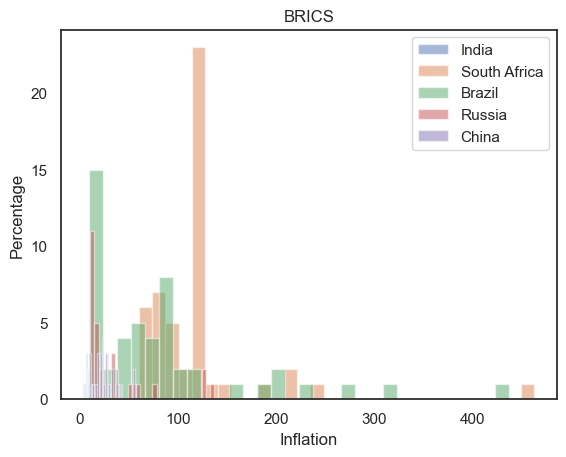
If you look at the inflation, you see South Africa and Brazil having higher bouts of inflation than China or India. This tells us about the nature of their economy and the role of their sustainable and geo-political contexts.
Scatterplots
fig= plt.figure(figsize=(18, 9))
fig.suptitle('Trade Analysis')
ax1= fig.add_subplot(331)
ax1.set_title('India')
ax1.plot(india['year'],
india['trade_gdp'],
color='blue')
ax2= fig.add_subplot(332)
ax2.set_title('China')
ax2.plot(china['year'],
china['trade_gdp'],
color='brown')
ax3= fig.add_subplot(333)
ax3.set_title('Russia')
ax3.plot(russia['year'],
russia['trade_gdp'],
color='pink')
ax4= fig.add_subplot(334)
ax4.set_title('South Africa')
ax4.plot(southafrica['year'],
southafrica['trade_gdp'],
color='pink')
ax5= fig.add_subplot(335)
ax5.set_title('Brazil')
ax5.plot(brazil['year'],
brazil['trade_gdp'],
color='orange')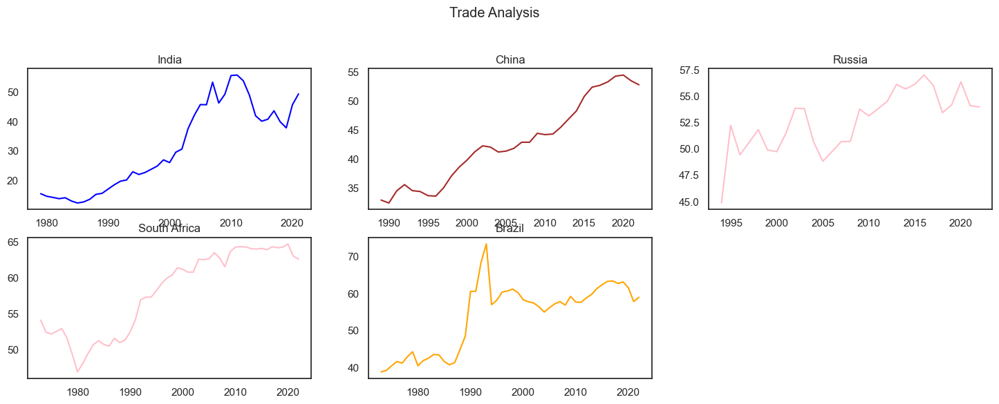
In terms of each countries’ Trade GDP, we see Russia performing better than Brazil and South Africa which a linear growth as it is increasing at an increasing rate. In terms of China, it’s trade % of the GDP has been positively rising. India, due to it’s economic crisis and the flush of trade borders opening emphasised on more international trade than it’s other counter-parts during that time. When you look at Brazil, Brazil’s influx of trade was more in the early 1990’s and it casually decreased. In terms of South Africa, you see it’s trade was completely closed in the 1980s due to its dependency on other natures with not have much resources to trade, but over a period of time, that changed.
# Create a Matplotlib figure and axis
fig, ax = plt.subplots(figsize=(10, 6))
# Create a boxplot for all numerical columns in the DataFrame
india.boxplot(ax=ax)
# Add labels and a title
ax.set_ylabel('Value')
ax.set_title('India')
# Show the plot
plt.xticks(rotation=90)
plt.show()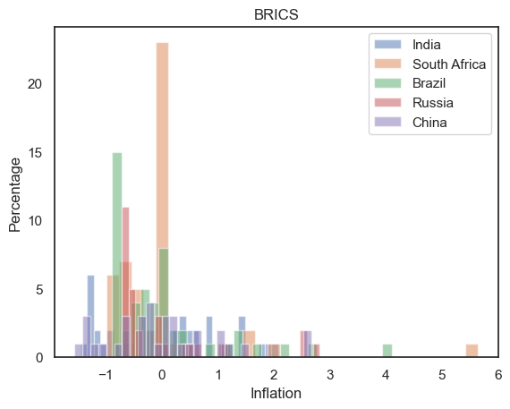
If you look at India’s boxplot graph, the adjusted Net National Income growth, the percentage of goods and the goods imported’s percentages are the data that has shown high variability, showcasing the importance of data bias and data normalisation. Yet,you also see vast differences in the max and min values between the blot points.
fig, ax = plt.subplots(figsize=(10, 6))
russia.boxplot(ax=ax)
ax.set_ylabel('Value')
ax.set_title('Russia')
plt.xticks(rotation=90)
plt.show()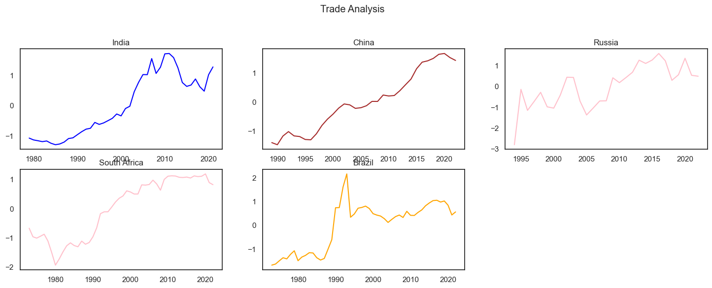
It is the same case with russia, but the services GDP % is actually high. If you see, the Imports of Goods and Servies as a % of GDP has greater variability and even the Services as a % of GDP.
fig, ax = plt.subplots(figsize=(10, 6))
china.boxplot(ax=ax)
ax.set_ylabel('Value')
ax.set_title('China')
plt.xticks(rotation=90)
plt.show()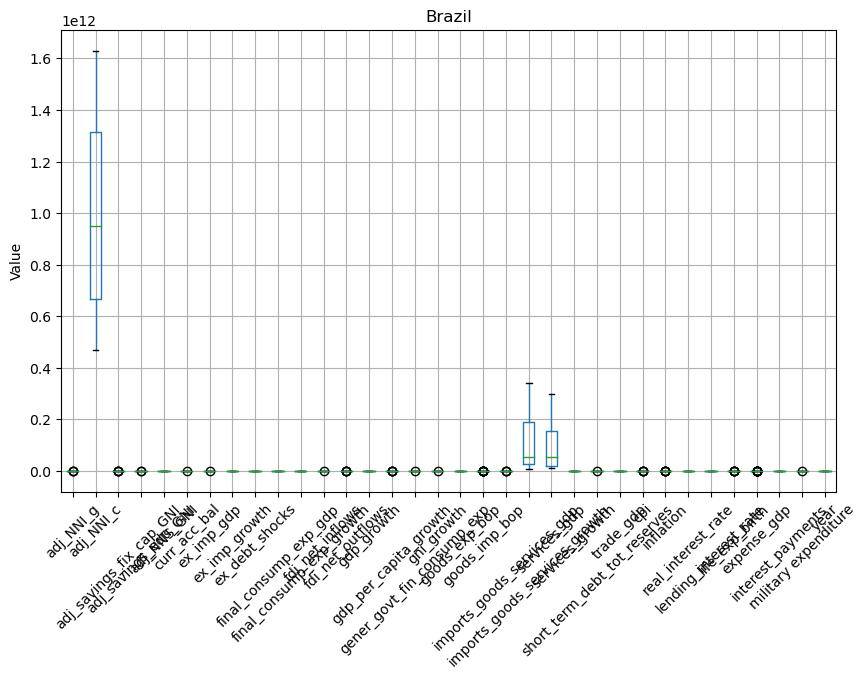
In terms of, you don’t see a lot of variability in the dataset except the educational expenses, the Imports of Goods and Services as a percentage of Growth, the % of services as a GDP.
fig, ax = plt.subplots(figsize=(10, 6))
southafrica.boxplot(ax=ax)
ax.set_ylabel('Value')
ax.set_title('South Africa')
plt.xticks(rotation=90)
plt.show()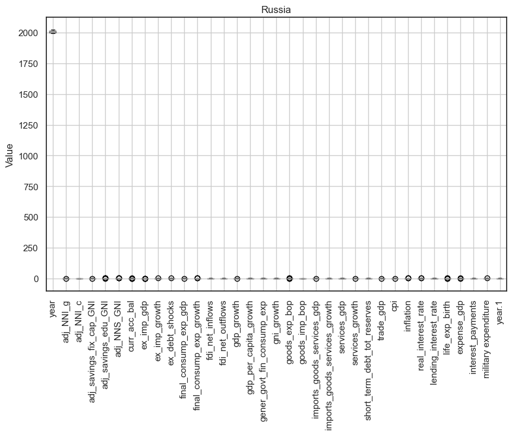
For South Africa, you see how the data shows the variability for similar ones highlighting the importance of data-normalisation.
fig, ax = plt.subplots(figsize=(10, 6))
brazil.boxplot(ax=ax)
ax.set_ylabel('Value')
ax.set_title('Brazil')
plt.xticks(rotation=90)
plt.show()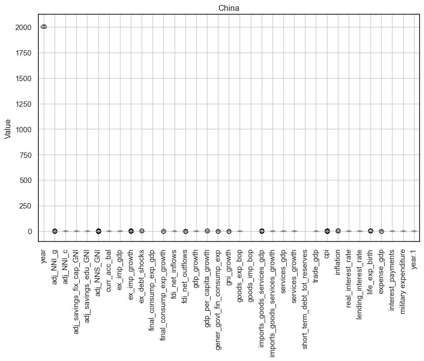
But the variability is comparitively lesser for Brazil.
sns.set_theme(style="white")
corr = india.corr(numeric_only=True) #Computing correlation matrix
mask = np.triu(np.ones_like(corr, dtype=bool))
f, ax = plt.subplots(figsize=(7, 5))
cmap = sns.diverging_palette(230, 20, as_cmap=True)
sns.heatmap(corr, mask=mask, cmap=cmap, vmax=.3, center=0,
square=True, linewidths=.5, cbar_kws={"shrink": .5})
plt.show()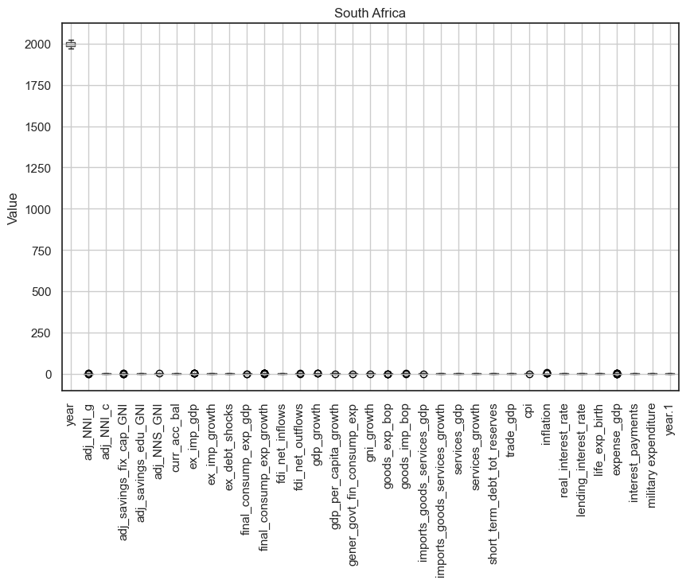
If you look at the variables that are correlated with each other, and a lot of variables that are negatively correlated with each other. For instance, Ajusted Net National Income in positively correlated with other variables and Final Consumption Expenditure is negatively correlated to the data.
sns.set_theme(style="white")
corr = china.corr(numeric_only=True) #Computing correlation matrix
mask = np.triu(np.ones_like(corr, dtype=bool))
f, ax = plt.subplots(figsize=(7, 5))
cmap = sns.diverging_palette(230, 20, as_cmap=True)
sns.heatmap(corr, mask=mask, cmap=cmap, vmax=.3, center=0,
square=True, linewidths=.5, cbar_kws={"shrink": .5})
plt.show()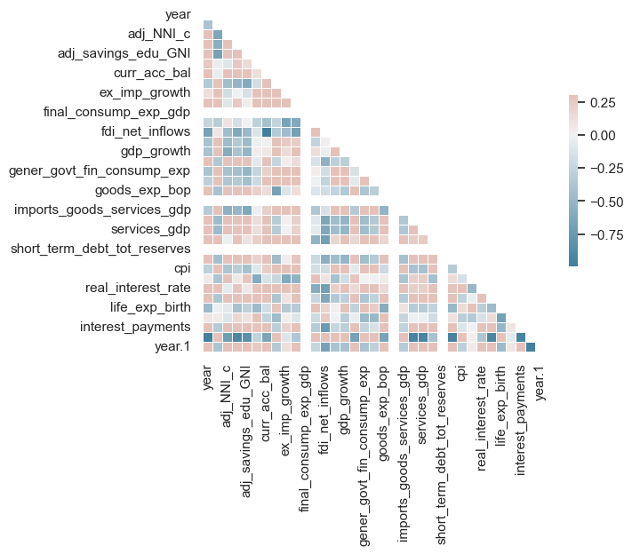
For China, interest payments are negatively correlated to most of the variables, so that FDI Net Inflows, and even the General Government Final Expenditure. And majority of the variables are positively correlated to each other too.
sns.set_theme(style="white")
corr = russia.corr(numeric_only=True) #Computing correlation matrix
mask = np.triu(np.ones_like(corr, dtype=bool))
f, ax = plt.subplots(figsize=(7, 5))
cmap = sns.diverging_palette(230, 20, as_cmap=True)
sns.heatmap(corr, mask=mask, cmap=cmap, vmax=.3, center=0,
square=True, linewidths=.5, cbar_kws={"shrink": .5})
plt.show()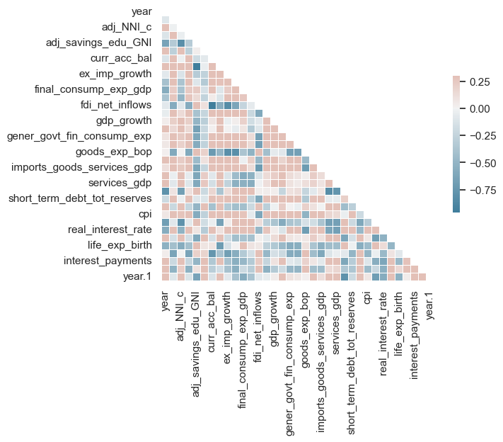
If you see for Russia, comparitively, most of the variables are negatively correlated to each other , few of them being Adjusted Savings for Education as a % for GNI, interest payemeets, etc.
sns.set_theme(style="white")
corr = southafrica.corr(numeric_only=True) #Computing correlation matrix
mask = np.triu(np.ones_like(corr, dtype=bool))
f, ax = plt.subplots(figsize=(7, 5))
cmap = sns.diverging_palette(230, 20, as_cmap=True)
sns.heatmap(corr, mask=mask, cmap=cmap, vmax=.3, center=0,
square=True, linewidths=.5, cbar_kws={"shrink": .5})
plt.show()For Africa to, there are a lot of variables that are highly correlated to each other and the same for Brazil as well.
sns.set_theme(style="white")
corr = brazil.corr(numeric_only=True) #Computing correlation matrix
mask = np.triu(np.ones_like(corr, dtype=bool))
f, ax = plt.subplots(figsize=(7, 5))
cmap = sns.diverging_palette(230, 20, as_cmap=True)
sns.heatmap(corr, mask=mask, cmap=cmap, vmax=.3, center=0,
square=True, linewidths=.5, cbar_kws={"shrink": .5})
plt.show()fig, axes = plt.subplots(1, 5, figsize=(15, 5))
sns.scatterplot(data=india, x="year", y="adj_NNI_g", hue='cpi', ax=axes[0])
axes[0].set_title('India')
sns.scatterplot(data=russia, x="year", y="adj_NNI_g", hue='cpi', ax=axes[1])
axes[1].set_title('Russia')
sns.scatterplot(data=china, x="year", y="adj_NNI_g", hue='cpi', ax=axes[2])
axes[2].set_title('China')
sns.scatterplot(data=brazil, x="year", y="adj_NNI_g", hue='cpi', ax=axes[3])
axes[3].set_title('Brazil')
sns.scatterplot(data=southafrica, x="year", y="adj_NNI_g", hue='cpi', ax=axes[4])
axes[4].set_title('South Africa')
plt.tight_layout()
plt.show()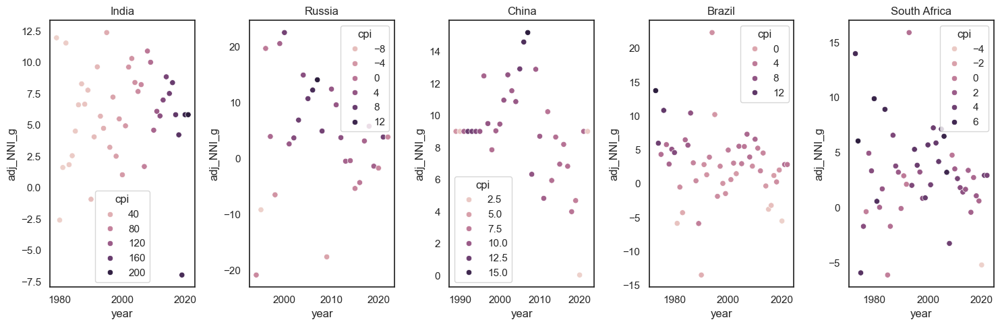
If you look at the scatterplot to understand the Adjusted Net National Income’s growth, Brazil, India, China and Russia almost show no correlation with the year. It shows that irrespective of the year, they’re parallel to the x axis, showcasing inelasticity.
fig, axes = plt.subplots(1, 5, figsize=(15, 5))
sns.violinplot(x="labels", y="gni_growth", data=india, ax=axes[0])
axes[0].set_title('India')
sns.violinplot(x="labels", y="gni_growth", data=russia, ax=axes[1])
axes[1].set_title('Russia')
sns.violinplot(x="labels", y="gni_growth", data=china, ax=axes[2])
axes[2].set_title('China')
sns.violinplot(x="labels", y="gni_growth", data=brazil, ax=axes[3])
axes[3].set_title('Brazil')
sns.violinplot(x="labels", y="gni_growth", data=southafrica, ax=axes[4])
axes[4].set_title('South Africa')
for ax in axes:
ax.set_xticklabels(ax.get_xticklabels(), rotation=90)
plt.tight_layout()
plt.show()/var/folders/cm/1bq_zvw92w99j_5d1p5jq5v40000gn/T/ipykernel_63651/980302243.py:13: UserWarning: FixedFormatter should only be used together with FixedLocator
ax.set_xticklabels(ax.get_xticklabels(), rotation=90)The violin plots showcase the association of the GDP labels with the GNI growth. There is greater density and spread in Russia, Brazil and South Africa in comparison to India.
Links used. 1. https://towardsdatascience.com/data-visualization-using-matplotlib-16f1aae5ce70 2. https://nbviewer.org/github/BadreeshShetty/Data-Visualization-using-Matplotlib/blob/master/%281%29Histograms.ipynb